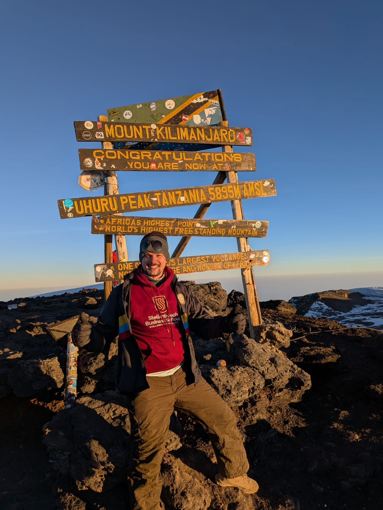
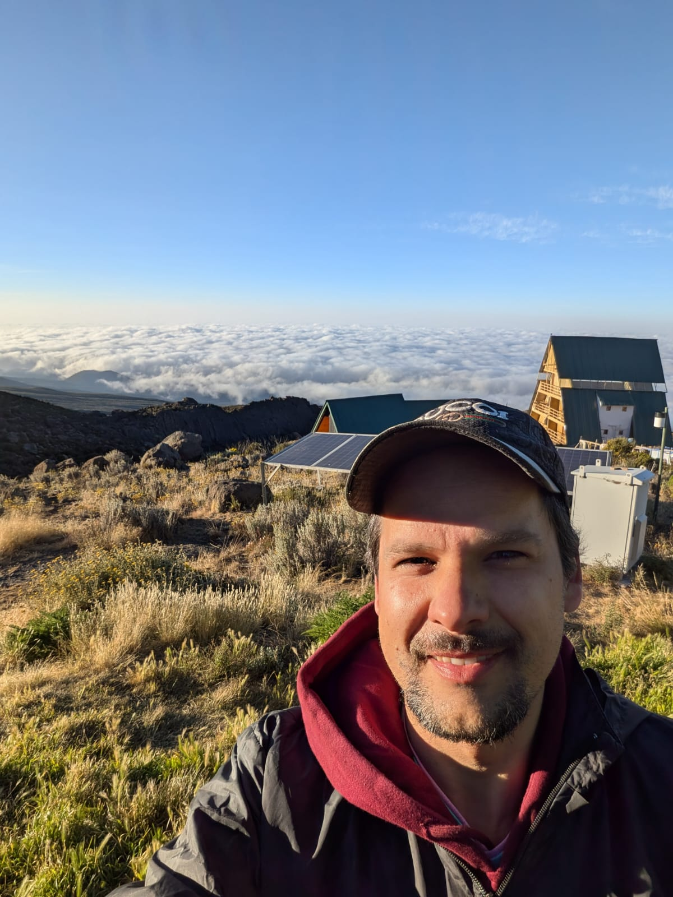
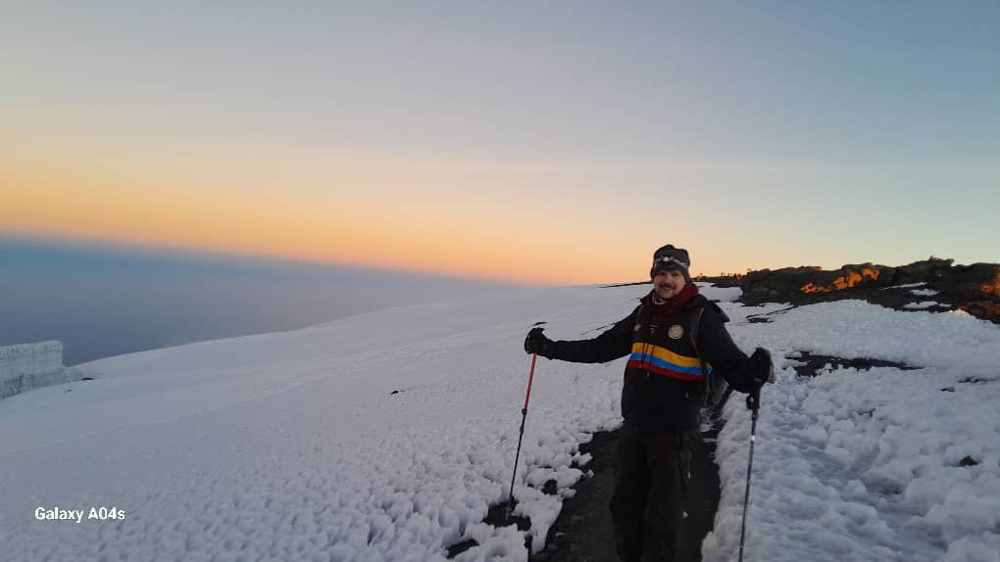

The sun was coming up over the crater rim, a red line on the horizon widening into orange. It was 6:30 AM, the sixth day, and I had just reached Uhuru Peak, the summit of Kilimanjaro. I looked out at the ridgeline in the distance, and there it was — small, almost forgettable — Mount Meru. Our guide confirmed it. A year earlier, Meru's summit had felt like the biggest physical challenge of my life. From up here, it looked like nothing at all.
I hadn't expected to cry at 5,895 metres. But I did.
Last year: Meru, with two people I'd just met
A year before Kilimanjaro, I hired two software engineers, D1 and D2. We worked remotely, so the first time the three of us stood in the same room was in Tanzania — and instead of an office, a welcome dinner, or a slide deck, the first thing we did together was climb Mount Meru.
There was no agenda, no icebreaker games, nothing designed. Just three people who barely knew each other, walking uphill for two days, getting cold and tired together, and standing on a summit together at the end of it. Looking back, I think that did more for how we worked as a team afterward than any onboarding process could have.
This year: Rongai
This July, I climbed Kilimanjaro via the Rongai route: Rongai Gate, Simba Camp, Third Cave, Kibo Hut, summit, then down through Horombo to Marangu Gate.
The first days were easy in the way big climbs always are before they turn — long walks through landscape that kept quietly changing underfoot, at some point crossing above the clouds. Good weather, good food, no real problems. The kind of days that trick you into thinking the whole climb will feel like this.

It didn't stay that way.
The night before the summit
The day we reached Kibo Hut, at around 4,700 metres, my body started to give out on its own schedule. A headache crept in during the afternoon. By evening it was a fever. I had no appetite and couldn't touch dinner. Haji checked my oxygen and heart rate — both fine, he said. Then he asked how I felt. I told him 9 out of 10. That wasn't true. But I wanted the summit attempt to stay on the table, and I suspected an honest answer would take it off.
I barely slept. We woke at 1 AM, ate popcorn and biscuits in the dark, and set off. Most groups had left hours earlier. We were the last tent standing.
Within the first stretch it was obvious my body was weaker than it had been on any previous day. I needed breaks Haji didn't quite understand the need for — this wasn't how I'd been climbing all week. But turning back felt worse than continuing, so I kept moving on whatever was left, slowly closing the gap on groups that had a head start of hours.
Gilman's Point
We reached Gilman's Point, 5,685 metres, around 5:15 AM. It's the point where the first climbers from our wider group had already turned around. Someone offered me a guava candy and I ate it gratefully. It felt, oddly, like the hardest part was behind me — like I'd already eaten the whole cow, and what remained was just the tail.
The summit, and Meru again
From Gilman's Point onward, the sky started to lighten in slow degrees. We passed Stella Point. Off to the left, I noticed a small peak in the distance and asked Haji if that was Meru. He said yes.
A year earlier, that same mountain had been the biggest thing I'd ever climbed. From here, it barely registered.

We reached Uhuru Peak at 6:30 AM, right as the sun broke the horizon. That's when the tears came — unplanned, a little embarrassing, impossible to explain in the moment.
There wasn't much time to stand still. The cold pushes you along, and even in the quieter season there were more people at the top than I expected. Going down from Gilman's Point, I half-walked, half-slid down loose volcanic scree, the way you'd ski down a slope in a hurry. I fell once and scratched my hand and barely registered it — by then, exhaustion had narrowed everything down to the single goal of reaching the tent.
Down again
We reached Kibo Hut, slept for a couple of hours, then packed up and pushed on to Horombo Hut, 3,700 metres, arriving around 4 PM. On the way down we passed a family still climbing up, late in the day, a six-year-old among them. Haji guessed they wouldn't reach Kibo before 9 PM.
That evening, my appetite finally came back — cucumber soup, pancakes, salt-and-sugar water, the small pleasures of a body recovering. By morning the headache was gone entirely. We walked the last stretch out through Marangu Gate, and just like that, it was over.
What stayed with me
The Meru comparison is the part I keep returning to. What looked enormous a year ago looked small this year — not because Meru changed, but because I was standing somewhere higher. I don't think that's really a story about mountains.
The goals that feel biggest right now, at work or anywhere else, are only that big from where I'm currently standing. Give it enough time, and enough climbing, and most of them shrink. That's not a reason to take them less seriously today. It's a reason to keep moving, and to trust that the next vantage point will make this one look different too.